10. Dvojrozmerné tabuľky¶
Pythonovský zoznam list (blízky jednorozmerným poliam v iných programovacích jazykoch) slúži hlavne na uchovávanie nejakej postupnosti alebo skupiny údajov. V takejto štruktúre sa dajú uchovávať aj dvojrozmerné tabuľky ako zoznam zoznamov (opäť je to analógia k dvojrozmerným poliam). Dvojrozmerné údaje sa často vyskytujú, napríklad ako rôzne hracie plochy (štvorčekový papier pre piškvorky, šachovnica pre doskové hry, rôzne typy labyrintov), ale napríklad aj rastrové obrázky sú často uchovávané v dvojrozmernej tabuľke. Aj v matematike sa niekedy pracuje s dvojrozmernými tabuľkami čísel (tzv. matice).
Už vieme, že prvkami zoznamu môžu byť opäť postupnosti (zoznamy alebo n-tice). Práve táto vlastnosť nám poslúži pri reprezentácii dvojrozmerných tabuliek. Napríklad, takúto tabuľku (matematickú maticu 3x3):
1 2 3
4 5 6
7 8 9
môžeme v Pythone zapísať:
m = [[1, 2, 3], [4, 5, 6], [7, 8, 9]]
Zoznam m má tri prvky: sú to tri riadky (zoznamy čísel - teda jednorozmerné polia). Našou prvou úlohou bude vypísať takýto zoznam do riadkov. Ale takýto jednoduchý výpis sa nám nie vždy bude hodiť:
>>> for riadok in m:
... print(riadok)
[1, 2, 3]
[4, 5, 6]
[7, 8, 9]
Častejšie to budeme robiť dvoma vnorenými cyklami. Zadefinujme funkciu vypis() s jedným parametrom dvojrozmernou tabuľkou:
def vypis(tab):
for riadok in tab:
for prvok in riadok:
print(prvok, end=' ')
print()
To isté vieme zapísať aj pomocou indexovania:
def vypis(tab):
for i in range(len(tab)):
for j in range(len(tab[i])):
print(tab[i][j], end=' ')
print()
Obe tieto funkcie sú veľmi častými šablónami pri práci s dvojrozmernými tabuľkami. Teraz výpis tabuľky vyzerá takto:
>>> vypis(m)
1 2 3
4 5 6
7 8 9
Vytváranie dvojrozmerných tabuliek¶
Pozrime, ako môžeme vytvárať nové dvojrozmerné tabuľky. Okrem priameho priradenia, napríklad:
>>> matica = [[1, 2, 3], [4, 5, 6], [7, 8, 9]]
ich môžeme poskladať z jednotlivých riadkov, napríklad:
>>> riadok1 = [1, 2, 3]
>>> riadok2 = [4, 5, 6]
>>> riadok3 = [7, 8, 9]
>>> matica = [riadok1, riadok2, riadok3]
Častejšie to ale bude pomocou nejakých cyklov. Závisí to od toho, či sa vo výslednej tabuľke niečo opakuje. Vytvorme dvojrozmernú tabuľku veľkosti 3x3, ktorá obsahuje samé 0:
>>> matica = []
>>> for i in range(3):
... matica.append([0, 0, 0])
>>> matica
[[0, 0, 0], [0, 0, 0], [0, 0, 0]]
>>> vypis(matica)
0 0 0
0 0 0
0 0 0
Využili sme tu štandardný spôsob vytvárania jednorozmerného zoznamu pomocou metódy append(). Hoci my už poznáme generátorovú notáciu (list compresension) a vieme túto maticu vytvoriť aj takto:
matica = [[0, 0, 0] for i in range(3)]
V ďalších riešeniach budeme niekedy ukazovať riešenia bez generátorovej notácie, ale aj pomocou nej.
Obsah ľubovoľného prvku matice môžeme zmeniť obyčajným priradením:
>>> matica[0][1] = 9
>>> matica[1][2] += 1
>>> vypis(matica)
0 9 0
0 0 1
0 0 0
Prvý index v [] zátvorkách väčšinou bude pre nás označovať poradové číslo riadka, v druhých zátvorkách je poradové číslo stĺpca. Už sme si zvykli, že riadky aj stĺpce sú číslované od 0.
Keďže pri definovaní matice sa zdá, že sa 3-krát opakuje to isté, zapíšeme to pomocou viacnásobného zreťazenia (operácia *) zoznamov:
>>> matica1 = [[0, 0, 0]] * 3
Opäť sa potvrdzuje, že je to veľmi nesprávny spôsob vytvárania prvkov zoznamu: zápis [0, 0, 0] označuje referenciu na trojprvkový zoznam, potom [[0, 0, 0]]*3 rozkopíruje túto jednu referenciu trikrát. Teda vytvorili sme zoznam, ktorý trikrát obsahuje referenciu na ten istý riadok. Presvedčíme sa o tom priradením do niektorých prvkov takéhoto zoznamu:
>>> matica1[0][1] = 9
>>> matica1[1][2] += 1
>>> vypis(matica1)
0 9 1
0 9 1
0 9 1
Uvedomte si, že zápis:
>>> matica1 = [[0, 0, 0]] * 3
v skutočnosti znamená:
>>> riadok = [0, 0, 0]
>>> matica1 = [riadok, riadok, riadok]
Zapamätajte si! Dvojrozmerné štruktúry nikdy nevytvárame tak, že viacnásobne zreťazujeme (násobíme) jeden riadok viackrát. Pritom:
>>> matica2 = [[0] * 3, [0] * 3, [0] * 3]
je už v poriadku, lebo v tomto zozname sme vytvorili tri rôzne riadky.
Niekedy sa na vytvorenie „prázdnej“ dvojrozmernej tabuľky definuje funkcia:
def vyrob(pocet_riadkov, pocet_stlpcov, hodnota=0):
vysl = []
for i in range(pocet_riadkov):
vysl.append([hodnota] * pocet_stlpcov)
return vysl
alebo pomocou generátorovej notácie:
def vyrob(pocet_riadkov, pocet_stlpcov, hodnota=0):
return [[hodnota] * pocet_stlpcov for i in range(pocet_riadkov)]
Otestujme:
>>> a = vyrob(3, 5)
>>> vypis(a)
0 0 0 0 0
0 0 0 0 0
0 0 0 0 0
>>> b = vyrob(2, 6, '*')
>>> vypis(b)
* * * * * *
* * * * * *
Iný tvar zápisu tejto funkcie:
def vyrob(pocet_riadkov, pocet_stlpcov, hodnota=0):
vysl = [None] * pocet_riadkov # None alebo ľubovoľná iná hodnota
for i in range(pocet_riadkov):
vysl[i] = [hodnota] * pocet_stlpcov
return vysl
Je na programátorovi, ktorú formu zápisu tejto funkcie použije.
Niekedy potrebujeme do takto pripravenej tabuľky priradiť nejaké hodnoty, napríklad postupným zvyšovaním nejakého počítadla:
def ocisluj(tab):
poc = 0
for i in range(len(tab)):
for j in range(len(tab[i])):
tab[i][j] = poc
poc += 1
Všimnite si, že táto funkcia vychádza z druhej funkcie (šablóny) pre vypisovanie dvojrozmernej tabuľky: namiesto výpisu prvku (print()) sme do neho niečo priradili. Táto funkcia ocisluj() nič nevypisuje ani nevracia žiadnu hodnotu „len“ modifikuje obsah tabuľky, ktorá je parametrom tejto funkcie.
>>> a = vyrob(3, 5)
>>> ocisluj(a)
>>> vypis(a)
0 1 2 3 4
5 6 7 8 9
10 11 12 13 14
Funkciu ocisluj môžeme zapísať aj takto jednoduchšie:
def ocisluj(tab):
poc = 0
for riadok in tab:
for j in range(len(riadok)):
riadok[j] = poc
poc += 1
Zobrazenie obsahu dvojrozmernej tabuľky v grafickej ploche
Zapíšme takúto funkciu na výpis obsahu dvojrozmernej tabuľky:
import tkinter
def kresli_text(tab):
d = 20
for r, riadok in enumerate(tab):
for s, prvok in enumerate(riadok):
canvas.create_text(s * d + 10, r * d + 10, text=prvok)
Otestujeme:
canvas = tkinter.Canvas()
canvas.pack()
t = vyrob(7, 11)
ocisluj(t)
kresli_text(t)
tkinter.mainloop()
Dostávame takýto výpis:
{kind=link}
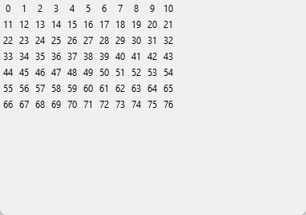
Zaujímavejší výstup v grafickej ploche dostaneme, keď namiesto čísel budeme vykresľovať farebné štvorčeky. Predpokladajme, že čísla v tabuľke sú len z nejakého malého intervalu, napríklad sú to čísla z intervalu <0, 3>, potom môžeme každú hodnotu v tabuľke zakresliť jednou zo štyroch farieb, napríklad 0 = 'white', 1 = 'black', 2 = 'red', 3 = 'blue'. Pre istotu pri priradení farby pre každý štvorček vypočítame zvyšok po delení počtom farieb, teda číslom 4:
import tkinter
def kresli(tab, d=20):
farby = ('white', 'black', 'red', 'blue')
for r, riadok in enumerate(tab):
for s, prvok in enumerate(riadok):
x, y = s*d + 5, r*d + 5
farba = farby[prvok % len(farby)]
canvas.create_rectangle(x, y, x + d, y + d,
fill=farba, outline='light gray')
Keď teraz vykreslíme obsah tabuľky:
canvas = tkinter.Canvas()
canvas.pack()
t = vyrob(7, 11)
ocisluj(t)
kresli(t)
tkinter.mainloop()
Dostávame takýto výpis:
{kind=link}
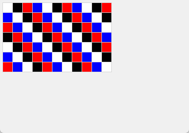
Aby sme takýto výpis mohli zavolať viackrát za sebou a zakaždým sa zobrazil aktuálny obsah tabuľky, trochu vylepšíme funkciu:
import tkinter
def kresli(tab, d=20, farby=('white', 'black', 'red', 'blue')):
canvas.delete('all')
for r, riadok in enumerate(tab):
for s, prvok in enumerate(riadok):
x, y = s * d + 5, r * d + 5
farba = farby[prvok % len(farby)]
canvas.create_rectangle(x, y, x + d, y + d,
fill=farba, outline='light gray')
canvas.update()
Otestujeme:
def zmen():
for i, riadok in enumerate(t):
for j in range(len(riadok)):
riadok[j] += i + 1
kresli(t)
canvas = tkinter.Canvas()
canvas.pack()
tkinter.Button(text='Zmeň', command=zmen).pack()
t = vyrob(7, 11)
ocisluj(t)
kresli(t)
tkinter.mainloop()
Najprv sa vykreslí predchádzajúci obrázok a po zatlačení tlačidla sa obrázok prekreslí:
{kind=link}
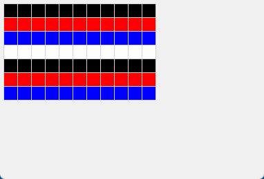
Všimnite si, že lokálnu premennú farby sme presunuli medzi parametre. Vďaka tomuto, budeme môcť túto funkciu zavolať aj takto:
kresli(t, 15, ('white', 'black', 'red', 'blue', 'yellow'))
Ďalším testom najprv vytvoríme tabuľku veľkosti 11x11 s hodnotou 0 (zobrazila by sa ako biela tabuľka). Potom vyrobíme červený rámik, t.j. po obvode zapíšeme hodnoty 2 a na záver na obe uhlopriečky zapíšeme hodnoty 3, t.j. po vykreslení budú modré:
canvas = tkinter.Canvas()
canvas.pack()
n = 11
t = vyrob(n, n)
for i in range(n):
for j in range(n):
if i == 0 or i == n - 1 or j == 0 or j == n - 1:
t[i][j] = 2
t[i][i] = t[i][n - 1 - i] = 3
kresli(t)
tkinter.mainloop()
Nakreslí:
{kind=link}
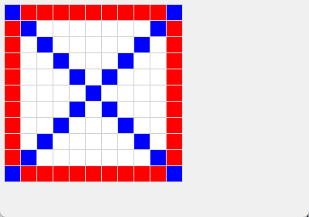
Niekoľko príkladov práce s dvojrozmernými tabuľkami
zvýšime obsah všetkých prvkov o 1:
def zvys_o_1(tab): for riadok in tab: for i in range(len(riadok)): riadok[i] += 1
Zrejme všetky prvky tejto tabuľky musia byť nejaké čísla, inak by funkcia spadla na chybe.
>>> p = [[5, 6, 7], [0, 0, 0], [-3, -2, -1]] >>> zvys_o_1(p) >>> p [[6, 7, 8], [1, 1, 1], [-2, -1, 0]]
podobný cieľ má aj druhá funkcia: hoci nemení samotnú tabuľku, vytvorí novú, ktorej prvky sú o jedna väčšie ako v pôvodnej tabuľke:
def o_1_viac(tab): nova_tab = [] for riadok in tab: novy_riadok = [0] * len(riadok) for i in range(len(riadok)): novy_riadok[i] = riadok[i] + 1 nova_tab.append(novy_riadok) return nova_tab
To isté trochu inak:
def o_1_viac(tab): nova_tab = [] for riadok in tab: novy_riadok = list(riadok) # kópia pôvodného riadka for i in range(len(novy_riadok)): novy_riadok[i] += 1 nova_tab.append(novy_riadok) return nova_tab
alebo generátorovou notáciou (najelegantnejšie):
def o_1_viac(tab): return [[prvok + 1 for prvok in riadok] for riadok in tab]
kópia dvojrozmernej tabuľky:
def kopia(tab): nova_tab = [] for riadok in tab: nova_tab.append(list(riadok)) return nova_tab
alebo generátorovou notáciou:
def kopia(tab): return [list(riadok) for riadok in tab]
číslovanie prvkov tabuľky inak ako to robila funkcia
cisluj(): nie po riadkoch ale po stĺpcoch. Predpokladáme, že všetky riadky sú rovnako dlhé:def ocisluj_po_stlpcoch(tab): poc = 0 for j in range(len(tab[0])): for i in range(len(tab)): tab[i][j] = poc poc += 1
Všimnite si, že táto funkcia má oproti pôvodnému
ocisluj()vymenené dva riadky for-cyklov.>>> a = vyrob(3, 5) >>> ocisluj_po_stlpcoch(a) >>> vypis(a) 0 3 6 9 12 1 4 7 10 13 2 5 8 11 14
spočítame počet výskytov nejakej hodnoty:
def pocet(tab, hodnota): vysl = 0 for riadok in tab: for prvok in riadok: if prvok == hodnota: vysl += 1 return vysl
Ak využijeme generátorovú notáciu:
def pocet(tab, hodnota): return sum(prvok == hodnota for riadok in tab for prvok in riadok)
Využili sme tu prvú verziu funkcie (šablóny) pre výpis dvojrozmernej tabuľky. Ak si ale pripomenieme, že niečo podobné robí štandardná metóda
count(), ale táto funguje len pre jednorozmerné zoznamy, môžeme našu funkciu vylepšiť:def pocet(tab, hodnota): vysl = 0 for riadok in tab: vysl += riadok.count(hodnota) return vysl
alebo využijeme generátorovú notáciu:
def pocet(tab, hodnota): return sum(riadok.count(hodnota) for riadok in tab)
Otestujeme:
>>> a = [[1, 2, 1, 2], [4, 3, 2, 1], [2, 1, 3, 1]] >>> pocet(a, 1) 5 >>> pocet(a, 4) 1 >>> pocet(a, 5) 0
funkcia zistí, či je nejaká matica (dvojrozmerný zoznam) symetrická, t. j. či sú prvky pod a nad hlavnou uhlopriečkou rovnaké, čo znamená, že má platiť
matica[i][j] == matica[j][i]pre každéiaj:def symetricka(matica): vysl = True for i in range(len(matica)): for j in range(len(matica[i])): if matica[i][j] != matica[j][i]: vysl = False return vysl
Hoci je toto riešenie korektné, má niekoľko nedostatkov:
funkcia zbytočne testuje každú dvojicu prvkov
matica[i][j]amatica[j][i]dvakrát, napríklad čimatica[0][2] == matica[2][0]ajmatica[2][0] == matica[0][2], tiež zrejme netreba kontrolovať prvky na hlavnej uhlopriečke, čimatica[i][i] == matica[i][i]keď sa vo vnútornom cykle zistí, že sme našli dvojicu
matica[i][j]amatica[j][i], ktoré sú navzájom rôzne, hoci sa zapamätá, že výsledok funkcie budeFalse, ďalej sa pokračuje prehľadávať zvyšok matice - toto je zrejme zbytočné, lebo výsledok je už známy - asi by sme mali vyskočiť z týchto cyklov; POZOR! príkazbreakale neurobí to, čo by sa nám tu hodilo:
def symetricka(matica): vysl = True for i in range(len(matica)): for j in range(len(matica[i])): if matica[i][j] != matica[j][i]: vysl = False break # vyskočí z cyklu return vysl
Takéto vyskočenie z cyklu nám veľmi nepomôže, lebo vyskakuje sa len z vnútorného a ďalej sa pokračuje vo vonkajšom. Našťastie my tu nepotrebujeme vyskakovať z cyklu, ale môžeme priamo ukončiť celú funkciu aj s návratovou hodnotou
False.Prepíšme funkciu tak, aby zbytočne dvakrát nekontrolovala každú dvojicu prvkov a aby sa korektne ukončila, keď nájde nerovnakú dvojicu:
def symetricka(matica): for i in range(1, len(matica)): for j in range(i): if matica[i][j] != matica[j][i]: return False return True
funkcia vráti pozíciu prvého výskytu nejakej hodnoty, teda dvojicu
(riadok, stĺpec). Keďže budeme potrebovať poznať indexy konkrétnych prvkov zoznamu, použijeme šablónu s indexmi:def index(tab, hodnota): for i in range(len(tab)): for j in range(len(tab[i])): if tab[i][j] == hodnota: return i, j
Funkcia skončí, keď nájde prvý výskyt hľadanej hodnoty (prechádza po riadkoch zľava doprava):
>>> a = [[1, 2, 1, 2], [1, 2, 3, 4], [2, 1, 3, 1]] >>> index(a, 3) (1, 2) >>> index(a, 5)
Na tomto poslednom príklade vidíme, že naša funkcia index() v nejakom prípade nevrátila „nič“. My už vieme, že vrátila špeciálnu hodnotu None, ktorá sa ale v príkazovom režime nevypíše. Ak by sme výsledok volania funkcie vypísali príkazom print(), dozvieme sa:
>>> print(index(a, 5))
None
Tabuľky s rôzne dlhými riadkami¶
Doteraz sme predpokladali, že všetky riadky dvojrozmernej štruktúry majú rovnakú dĺžku. Niekedy sa ale stretáme so situáciou, keď riadky budú rôzne dlhé. Napríklad:
>>> pt = [[1], [1, 1], [1, 2, 1], [1, 3, 3, 1], [1, 4, 6, 4, 1], [1, 5, 10, 10, 5, 1]]
>>> vypis(pt)
1
1 1
1 2 1
1 3 3 1
1 4 6 4 1
1 5 10 10 5 1
Tento zoznam obsahuje prvých niekoľko riadkov Pascalovho trojuholníka. Našťastie funkciu vypis() (obe verzie) sme napísali tak, že správne vypíšu aj zoznamy s rôzne dlhými riadkami.
Niektoré tabuľky nemusia mať takto pravidelný tvar, napríklad:
>>> delitele = [[6, 2, 3], [13, 13], [280, 2, 2, 2, 5, 7], [1]]
>>> vypis(delitele)
6 2 3
13 13
280 2 2 2 5 7
1
Zoznam delitele má v každom riadku rozklad nejakého čísla (prvý prvok) na prvočinitele (súčin zvyšných prvkov).
Preto už pri zostavovaní funkcií musíme niekedy myslieť na to, že parametrom môže byť aj zoznam s rôznou dĺžkou riadkov. Zapíšme funkciu, ktorá nám vráti zoznam všetkých dĺžok riadkov danej dvojrozmernej štruktúry:
def dlzky(tab):
vysl = []
for riadok in tab:
vysl.append(len(riadok))
return vysl
alebo pomocou generátorovej notácie:
def dlzky(tab):
return [len(riadok) for riadok in tab]
Pre naše dva príklady zoznamov dostávame:
>>> dlzky(pt)
[1, 2, 3, 4, 5, 6]
>>> dlzky(delitele)
[3, 2, 6, 1]
Podobným spôsobom môžeme generovať nové dvojrozmerné štruktúry s rôznou dĺžkou riadkov, pre ktoré poznáme práve len tieto dĺžky:
def vyrob_d(dlzky, hodnota=0):
vysl = []
for dlzka in dlzky:
vysl.append([hodnota] * dlzka)
return vysl
alebo pomocou generátorovej notácie:
def vyrob_d(dlzky, hodnota=0):
return [[hodnota] * dlzka for dlzka in dlzky]
Otestujeme:
>>> m1 = vyrob_d([3, 0, 1])
>>> m1
[[0, 0, 0], [], [0]]
>>> m2 = vyrob_d(dlzky(delitele), 1)
>>> vypis(m2)
1 1 1
1 1
1 1 1 1 1 1
1
Zamyslite sa, ako budú vyzerať tieto zoznamy:
>>> n = 7
>>> m3 = vyrob_d([n] * n)
>>> m4 = vyrob_d(range(n))
>>> m5 = vyrob_d(range(n, 0, -2))
Ukážme, ako vyzerá dvojrozmerná tabuľka s rôzne dlhými riadkami v grafickej ploche. Najprv vygenerujeme náhodný obsah tabuľky a potom každý riadok skrátime:
import random
def zmen():
for i in range(n):
t[i] = t[i][:i + 1] # každý i-ty riadok sa skráti na i+1 prvkov
kresli(t)
canvas = tkinter.Canvas()
canvas.pack()
tkinter.Button(text='Zmeň', command=zmen).pack()
n = 11
t = vyrob(n, n) # tabuľka n x n samých 0
for riadok in t:
for i in range(len(riadok)):
riadok[i] = random.randint(0, 2) # všetky prvky sú náhodné z <0, 2>
# t = [[random.randint(0, 2) for i in range(n)] for j in range(n)]]
kresli(t)
tkinter.mainloop()
Najprv bude:
{kind=link}
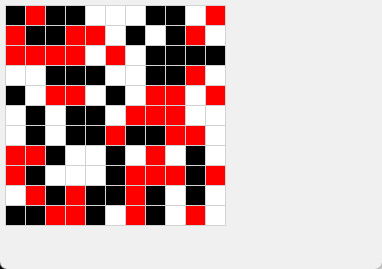
po zatlačení tlačidla:
{kind=link}
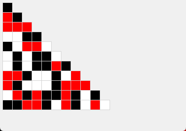
Hoci, keby sme riadky tabuľky skracovali namiesto pôvodného cyklu takto:
for i in range(n):
t[i] = t[i][:random.randrange(n)]
Mohli by sme dostať takéto zobrazenie (niektoré riadky tabuľky môžu byť teraz prázdne):
{kind=link}
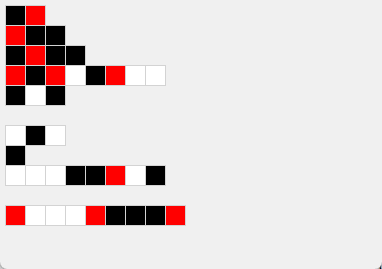
Hra LIFE¶
Informácie k tejto informatickej simulačnej hre nájdete na wikipedii
Pravidlá:
v nekonečnej štvorcovej sieti žijú bunky, ktoré sa rôzne rozmnožujú, resp. umierajú
v každom políčku siete je buď živá bunka, alebo je políčko prázdne (budeme označovať ako 1 a 0)
každé políčko má 8 susedov (vodorovne, zvislo aj po uhlopriečke)
v každej generácii sa s každým jedným políčkom urobí:
ak je na políčku bunka a má práve 2 alebo 3 susedov, tak táto bunka prežije aj do ďalšej generácie
ak je na políčku bunka a má buď 0 alebo 1 suseda, alebo viac ako 3 susedov, tak bunka na tomto políčku do ďalšej generácie neprežije (umiera)
ak má prázdne políčko presne na troch susediacich políčkach živé bunky, tak sa tu v ďalšej generácii narodí nová bunka
Štvorcovú sieť s 0 a 1 budeme ukladať v dvojrozmernej tabuľke veľkosti n x n. V tejto tabuľke je momentálna generácia bunkových živočíchov. Na to, aby sme vyrobili novú generáciu, si pripravíme pomocnú tabuľku rovnakej veľkosti a do nej budeme postupne zapisovať bunky novej generácie. Keď už bude celá táto pomocná tabuľka hotová, prekopírujeme ju do pôvodnej tabuľky. Dvojrozmernú tabuľku budeme vykresľovať do grafickej plochy.
import tkinter
import random
def inic(n):
vysl = [[random.randrange(10) == 1 for j in range(n)] for i in range(n)]
## vysl[5][2] = vysl[5][3] = vysl[5][4] = vysl[4][4] = vysl[3][3] = 1
## vysl[6][47] = vysl[6][46] = vysl[6][45] = vysl[5][45] = vysl[4][46] = 1
return vysl
def kresli(tab, d=8):
canvas.delete('all')
for r, riadok in enumerate(tab):
for s, prvok in enumerate(riadok):
x, y = s * d + 5, r * d + 5
farba = ('white', 'black')[prvok]
canvas.create_rectangle(x, y, x + d, y + d, fill=farba, outline='lightgray')
canvas.update()
def nova_generacia(p):
nova = [[0] * len(p[r]) for r in range(len(p))]
for r in range(1, len(p) - 1):
for s in range(1, len(p[r])-1):
ps = (p[r-1][s-1] + p[r-1][s] + p[r-1][s+1] +
p[r][s-1] + p[r][s+1] +
p[r+1][s-1] + p[r+1][s] + p[r+1][s+1])
if ps == 3 or ps == 2 and p[r][s]:
nova[r][s] = 1
return nova
canvas = tkinter.Canvas(width=410, height=410)
canvas.pack()
plocha = inic(50)
kresli(plocha)
for i in range(1000):
plocha = nova_generacia(plocha)
kresli(plocha)
tkinter.mainloop()
Na tejto sérii obrázkov môžete sledovať, ako sa s nejakej náhodnej pozície postupne generujú ďalšie generácie:
{kind=link}
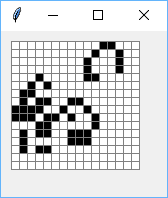
{kind=link}
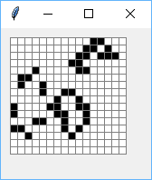
{kind=link}
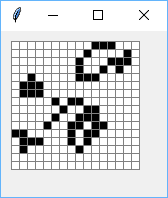
{kind=link}
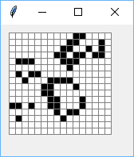
{kind=link}
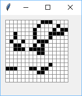
{kind=link}
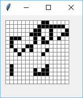
{kind=link}
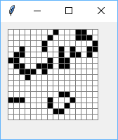
{kind=link}
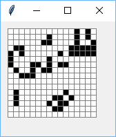
Namiesto náhodného obsahu môžeme v inic() vytvoriť prázdnu (vynulovanú) sieť, do ktorej priradíme:
vysl[5][2] = vysl[5][3] = vysl[5][4] = vysl[4][4] = vysl[3][3] = 1
Dostávame takýto klzák (glider), ktorý sa pohybuje po ploche nejakým smerom:
{kind=link}
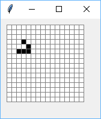
{kind=link}
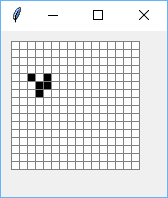
{kind=link}
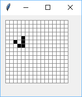
{kind=link}
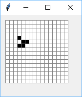
{kind=link}
Všimnite si, že po 4 generáciách má rovnaký tvar, ale je posunutý o 1 políčko dole a vpravo.
Cvičenie¶
Poznámka
riešenia úloh ulož do jedného súboru a odovzdaj na testovací server https://vektor.fmph.uniba.sk/
testovací server bude testovať úlohy označené odovzdaj
snaž sa vyriešiť čo najviac úloh aj takých, ktoré netestuje testovač
niektoré úlohy sú uvedené aj s riešením (sú označené znakom -), tie neodovzdávaj - sú určené na štúdium a inšpiráciu
prvé tri riadky súboru s riešením musia obsahovať:
# 10. cvicenie # student: Janko Hrasko # datum: 23.10.2025
zrejme ako študenta uvedieš svoje meno.
používaj len konštrukcie z doterajších prednášok (nepoužívaj
global)
- Modifikuj funkciu
vypis(tab, sirka=4), ktorá vypisuje dvojrozmernú tabuľku do riadkov, pričom každý prvok je formátovaný na zadanú šírku, napríklad presirka=5taktof'{repr(prvok):>5}'(alebof'{repr(prvok):>{sirka}}'). Otestuj:>>> vypis([[1, 6, 3.14], [0.5, 1.5, 2.5]], 5) 1 6 3.14 0.5 1.5 2.5 >>> vypis([[1, 2, 3], [None, None], ['4', '5', '6'], ['Python', 3.9]]) 1 2 3 None None '4' '5' '6' 'Python' 3.9
Funkciu teraz vylepši takto:
vypis(tab, sirka=None), kde parametersirkas hodnotouNoneznamená, že sa najprv zistí šírka „najširšieho“ prvku v tabuľke (teda pomocoulen(repr(prvok))) a táto hodnota sa nastaví ako šírka výpisu. Pre nastavenú číselnú hodnotu šírky sa to bude správať rovnako ako v predchádzajúca verzia. Napríklad:>>> vypis([[1, 2], [3, 4, 5, 6], [7, 8, 9]]) 1 2 3 4 5 6 7 8 9 >>> vypis([[1, 2], [3, 4, 555, 6], [7, 8, 9]]) 1 2 3 4 555 6 7 8 9 >>> vypis([[1, 2], [3, '4', 5, 6], [7, 8, -9]], 1) 1 2 3 '4' 5 6 7 8 -9 >>> vypis([[1, 2, 3], [None, None], ['4', '5', '6'], ['Python', 3.9]]) 1 2 3 None None '4' '5' '6' 'Python' 3.9
Pri riešení tejto úlohy skús čo najviac využiť generátorovú notáciu.
- Zadefinuj funkcie
max2(tab),min2(tab),sum2(tab)alen2(tab), ktoré zistia (vrátia pomocoureturn) najväčší prvok, najmenší prvok a súčet všetkých prvkov dvojrozmernej tabuľke čísel (bez prázdnych riadkov) a tiež počet prvkov tabuľky (teraz môže obsahovať prvky rôznych typov a aj prázdne riadky). Využi štandardné funkciemax(),min(),sum()alen(). Všetky tieto funkcie zadefinuj pomocou generátorovej notácie, teda by mali byť v tvare:def max2(tab): return ...
Napríklad:
>>> p = [[1, 6, 3.14], [0.5, 1.5], [2.5]] >>> max2(p) 6 >>> min2(p) 0.5 >>> sum2(p) 14.64 >>> r = [[-1, -2], [-3, -4]] >>> max2(r) -1 >>> min2(r) -4 >>> len2([[1, 2, 3], [2], [], [5, 1]]) 6
odovzdaj Napíš funkciu
zoznam_suctov(tab)počíta súčty prvkov v jednotlivých riadkoch dvojrozmernej tabuľky a ukladá ich do výsledného zoznamu. Táto funkcia by mala fungovať nielen pre číselné hodnoty, ale pre ľubovoľný typ, v ktorom funguje operácia+. Pre prázdny riadok tabuľky, funkcia spočítaNone. Napríklad:>>> suc = zoznam_suctov([[1, 2, 3], [4], [], [5, 6]]) >>> suc [6, 4, None, 11] >>> zoznam_suctov([['1', 'x', '2'], [], [5, 6], [3.1, 4], [(5, 6), (7,)]]) ['1x2', None, 11, 7.1, (5, 6, 7)]
odovzdaj Napíš funkciu
preklop(tab), ktorá vyrobí novú dvojrozmernú tabuľku, v ktorej bude pôvodná tabuľka preklopená okolo hlavnej uhlopriečky (vymenené riadky a stĺpce). Predpokladaj, že všetky riadky majú rovnakú dĺžku. Napríklad:>>> p = [[1, 2], [5, 6], [3, 4]] >>> vypis(preklop(p), 2) 1 5 3 2 6 4 >>> vypis(p, 2) 1 2 5 6 3 4
odovzdaj Zadefinuj funkciu
ocisluj2(tab, start=0), ktorá zmení všetky prvky dvojrozmernej tabuľky tak, že ich postupne prechádza po stĺpcoch a čísluje ich celými číslami odstart. Riadky tabuľky nemusia mať rovnakú dĺžku. Napríklad:>>> ab = [[1, 1, 1], [], [1, 1, 1, 1], [1], [1, 1, 1, 1, 1]] >>> ocisluj2(ab) >>> vypis(ab) 0 4 7 1 5 8 10 2 3 6 9 11 12
odovzdaj Zadefinuj funkciu
pascalov_trojuholnik(n), ktorá vygeneruje prvýchnriadkov pascalovho trojuholníka a uloží ich do dvojrozmernej tabuľky. Pri vytváraní každého nasledovného riadka tabuľky využi predchádzajúci riadok (každý prvok v tomto novom riadku - okrem prvého a posledného - je súčtom dvoch susedných v predchádzajúcom riadku). Napríklad:>>> pt = pascalov_trojuholnik(6) >>> vypis(pt) 1 1 1 1 2 1 1 3 3 1 1 4 6 4 1 1 5 10 10 5 1
Textový súbor v každom riadku obsahuje niekoľko slov, oddelených medzerou (riadok môže byť aj prázdny). Napíš funkciu
citaj(meno_suboru), ktorá prečíta tento súbor a vyrobí z neho dvojrozmernú tabuľku slov: každý riadok tabuľky zodpovedá jednému riadku súboru. Napríklad, ak súbor'text.txt'obsahuje:Anička dušička kde si bola keď si si čižmičky zarosila
potom
>>> x = citaj('text.txt') >>> x [['Anička', 'dušička'], ['kde', 'si', 'bola'], ['keď', 'si', 'si', 'čižmičky'], ['zarosila']] >>> vypis(x) 'Anička' 'dušička' 'kde' 'si' 'bola' 'keď' 'si' 'si' 'čižmičky' 'zarosila'
Funkcia
zapis(tab, meno_suboru)je opačná k funkciicitajv predchádzajúcej úlohe: zapíše danú dvojrozmernú tabuľku slov do súboru. Napríklad:>>> x = [['Anička', 'dušička'], ['kde', 'si', 'bola'], ['keď', 'si', 'si', 'čižmičky'], ['zarosila']] >>> zapis(x, 'text1.txt')
vytvorí rovnaký súbor ako bol
'text.txt'.Uvedom si, že ak by vstupná dvojrozmerná tabuľka obsahovala čísla, táto funkcia vytvorí korektný súbor čísel, napríklad:
>>> zapis([[1, 11, 21], [345], [-5, 10]], 'cisla.txt')
vytvorí súbor
'cisla.txt':1 11 21 345 -5 10
Funkcia
citaj_cisla(meno_suboru)bude podobná funkciicitaj(meno_suboru)z (8) úlohy, len táto predpokladá, že vstupný súbor obsahuje len celé čísla. Funkcia vráti dvojrozmernú tabuľku čísel. Napríklad, pre textový súbor'cisla.txt'z (9) úlohy:>>> tab = citaj_cisla('cisla.txt') >>> tab [[1, 11, 21], [345], [-5, 10]]
- Z prednášky uprav funkciu
kresli:def kresli(tab, d=20, farby=('black', 'yellow', 'orange', 'blue', 'red', 'white')): canvas.delete('all') for r, riadok in enumerate(tab): for s, prvok in enumerate(riadok): x, y = s * d + 5, r * d + 5 farba = farby[prvok] canvas.create_rectangle(x, y, x + d, y + d, fill=farba, outline='light gray') canvas.update()
tak, aby sa prvky tabuľky, ktoré majú hodnotu
None, nekreslili (ostalo po nich prázdne miesto). Teraz vytvor dvojrozmernú tabuľkup(všetky riadky majú rovnakú dĺžku5), po vykreslení ktorej dostávaš takýto obrázok: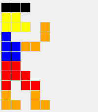
{kind=link}
Napíš funkciu
zrkadlo(obr), ktorá z dvojrozmernej tabuľkyobrvyrobí novú tak, že každému riadku pridáNonea zrkadlový obsah riadka. Napríklad pre obrázok z (11) úlohy:kresli(zrkadlo(p))
nakreslí:
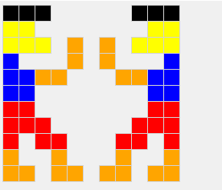
a potom aj:
kresli(zrkadlo(zrkadlo(p)), 15)
nakreslí:
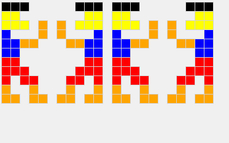
{kind=link}
{kind=link}
Napíš funkciu
zvacsi(obr), ktorá z dvojrozmernej tabuľkyobrvyrobí novú tak, že sa dvojnásobne zväčší: nová tabuľka má dvojnásobný počet riadkov aj stĺpcov a každý pôvodný prvok tu teraz bude 4-krát. Funkcia nezmení pôvodnú tabuľkuobr. Napríklad pre obrázok z (11) úlohy:kresli(zvacsi(p), 10)
nakreslí:
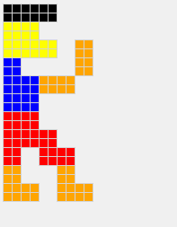
a potom aj:
kresli(zvacsi(zvacsi(p)), 5)
nakreslí:
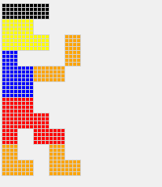
{kind=link}
{kind=link}
Napíš funkciu
nahrad(obr, post), ktorá z dvojrozmernej tabuľkyobrvyrobí novú tak, že zoberie postupnosť dvojícpost, každá dvojica obsahuje dve hodnoty (čo nahradiť, čím nahradiť) a postupne všetky prvky pôvodnej tabuľky nahradí podľa tohto zoznamu. Napríklad pre obrázok z (11) úlohy:kresli(nahrad(p, ((3, 4), (4, 0), (None, 5))))
nakreslí:
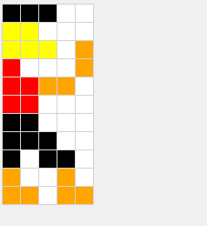
{kind=link}
- Napíš funkciu
kruh(tab, r, r1, s1, hodnota), ktorá bude vypĺňať nejakú oblasť dvojrozmernej tabuľky zadanou hodnotouhodnota. Touto oblasťou bude kruh s polomeromra so stredomr1,s1(riadok, stĺpec). Funkcia by mohla fungovať tak, že postupne skontroluje všetky prvky tabuľky, či ich „vzdialenosť“ od stredu je menšia alebo rovnára vtedy im zmení hodnoty. Funkcia nič nevracia ani nevypisuje. Funkcia modifikuje obsah tabuľky. Napríklad po nakreslení štyroch kruhov v tabuľke 50x50:kruh(t, 17, 20, 30, 4) kruh(t, 13, 40, 25, 3) kruh(t, 10, 15, 15, 0) kruh(t, 8, 15, 15, 5)
môžeš dostať:
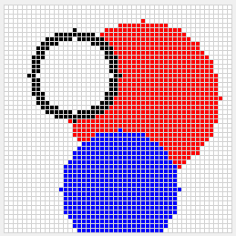
{kind=link}
odovzdaj Napíš funkciu
do_radu(tab), ktorá vráti vytvorenú jednorozmernú tabuľku (zoznamlist) z riadkov dvojrozmernej tabuľkytab. Napríklad:>>> tab1 = [[1], [2, 3, 4], [5, 6], [7]] >>> zoz = do_radu(tab1) >>> zoz [1, 2, 3, 4, 5, 6, 7] >>> do_radu([['prvy'], [], ['druhy', 'treti']]) ['prvy', 'druhy', 'treti']
odovzdaj Napíš funkciu
do_dvojrozmernej(postupnost, sirka), ktorá bude v istom zmysle fungovať naopak ako funkciado_raduz predchádzajúceho príkladu: funkcia dostáva postupnosť nejakých hodnôt (napríklad jednorozmerný zoznam) a vyrobí z nej dvojrozmernú tabuľku, v ktorej okrem posledného riadku majú všetky zadanú šírku. Posledný riadok môže byť kratší. Napríklad:>>> t1 = do_dvojrozmernej(range(10), 3) >>> vypis(t1) 0 1 2 3 4 5 6 7 8 9 >>> t2 = do_dvojrozmernej(do_radu(t1), 5) >>> vypis(t2) 0 1 2 3 4 5 6 7 8 9 >>> vypis(do_dvojrozmernej('programovanie', 5)) 'p' 'r' 'o' 'g' 'r' 'a' 'm' 'o' 'v' 'a' 'n' 'i' 'e'
5. Týždenný projekt¶
Poznámka
riešenie úlohy ulož do textového súboru s príponou
.pya odovzdaj na testovací server https://vektor.fmph.uniba.sk/ najneskôr 14.novembra do 18:00.prvé tri riadky súboru s riešením musia obsahovať:
# 5. tyzdenny projekt # student: Janko Hrasko # datum: 30.10.2025
zrejme ako študenta uvedieš svoje meno, dátum uprav podľa dátumu odovzdania
používaj len konštrukcie z doterajších prednášok (nepoužívaj
global), môžeš už používať aj asociatívne polia
L-systém (Lindenmayerov systém) bol vyvinutý pre modelovanie rastu rastlín. L-systém popisuje pravidlá pre vývoj rastliny, ktoré sa opakovane aplikujú na vznikajúci model. Tieto pravidlá môžu, napríklad popisovať, za akých podmienok sa výhonok rastliny rozdvojí, či má vzniknúť list alebo či má čásť rastliny uhynúť. Výsledný model sa môže vykresliť ako obrázok pomocou korytnačej grafiky. L-systémy sa tiež dajú použiť na generovanie rôznych kriviek a fraktálov.
Ústredným konceptom L-systémov je prepisovanie. Funguje to tak, že sa počiatočný stav (reťazec znakov, tzv. axióma alebo iniciátor) rekurzívne nahradzuje pomocou prepisovacích pravidiel. Toto sa aplikuje paralelne a teda sa súčasne nahrádzajú všetky písmená v danom reťazci.
Ukážme to na príklade. Nech počiatočným stavom je písmeno 'F'. Budeme mať jediné prepisovacie pravidlo 'F -> F-F++F-F', ktoré označuje, že každé písmeno 'F' v momentálnom reťazci (budeme mu hovoriť „slovo“) sa v jednom kroku nahradí reťazcom 'F-F++F-F'. Pozrime sa, ako postupne z počiatočného slova 'F' budú vznikať nové slová:
0: F
1: F-F++F-F
2: F-F++F-F-F-F++F-F++F-F++F-F-F-F++F-F
3: F-F++F-F-F-F++F-F++F-F++F-F-F-F++F-F-F-F++F-F-F-F++F-F++F-F++F-F-F-F++F-F++F-F++F-F-F-F++F-F++F-F++F-F-F-F++F-F-F-F++F-F-F-F++F-F++F-F++F-F-F-F++F-F
Takto by sme mohli pokračovať a stále by vznikal dlhší a dlhší reťazec (zrejme v každom ďalšom kroku je počet písmen 'F' štyrikrát väčší).
Takto generované reťazce začnú byť pre nás zaujímavé, keď ich budeme vykresľovať pomocou korytnačej grafiky. Zvolíme si taktúto interpretáciu písmen v reťazci:
písmeno
'F'(ale aj písmeno'G') zodpovedá korytnačiemu forward a teda príkazut.fd(dlzka)znak
'-'zodpovedá korytnačiemu left a teda príkazut.lt(uhol)znak
'+'zodpovedá korytnačiemu right a teda príkazut.rt(uhol)
Ešte sa treba dohodnúť na dlzka a uhol, aby sme to mohli kresliť. Každý L-systém bude mať definovanú vlastnú dĺžku kroku a aj uhol otočenia. Ak si v tomto príklade zvolíme dlzka=20 a uhol=60, tak po prvom kroku ('F-F++F-F') dostávame postupnosť príkazov:
t.fd(20); t.lt(60); t.fd(20); t.rt(60); t.rt(60); t.fd(20); t.lt(60); t.fd(20)
Niektorí z vás v tomto spoznávajú prvú úroveň krivky „snehová vločka“ (teda Kochova krivka). Keby sme takto zobrazili druhý krok L-systému, dostali by sme druhú úroveň „snehovej vločky“. My už vieme, že aby to bola kompletná snehová vločka, túto krivku treba trikrát opakovať a zakaždým sa otočiť o 120 stupňov vpravo. Toto vieme jednoducho zabezpečiť tak, že zmeníme počiatočné slovo (axiómu) na F++F++F. Teraz by sme naozaj dostali kompletnú snehovú vločku ľubovoľnej úrovne, ktorú si zvolíme. Zrejme bude stačiť nahrádzať všetky výskyty písmena 'F' pomocou prepisovacieho pravidla požadovaný počet krát.
Pre niektoré takéto krivky sa nám budú hodiť ešte ďalšie dva príkazy, teda symboly, ktoré sa môžu vyskytnúť v prepisovacích pravidlách:
znak
'['bude označovať, že si korytnačka na tomto mieste zapamätá momentálny uhol natočenia (t.heading()) a momentálny pozíciu (t.pos()) a ďalej normálne pokračuje v ďalších príkazochznak
']'bude označovať, že sa korytnačka presunie (so zdvihnutým perom) na zapamätané miesto a nastaví si zapamätaný uhol (zrejem urobít.teleport(pozícia)at.seth(uhol))v tomto prípade si takto zapamätané informácie po presunutí zruší
musíš si premyslieť situáciu, keď budú tieto hranaté zátvorky navzájom vnorené, napríklad
F[-F[+F]]použi tu novú korytnačiu metódu
teleport(pos), pre ktorú funguje ajteleport(x, y); korytnačka sa presunie na zadanú pozíciu so zdvihnutým perom, podobne akosetpos(...); pozor, táto metóda funguje v pythone až od verzie 3.12, ak máš staršiu, doinštaluj si aktuálnu verziu pythonu
Tvojou úlohou bude naprogramovať tri pythonovské fukcie:
funkcia
generuj(axioma, pravidla, pocet), ktorá z počiatočného slova (znakový reťazecaxioma) pomocou prepisovacích pravidiel (zoznam reťazcov v tvarepísmeno -> postupnosť znakov) vygeneruje reťazec, ktorý vznikne popocetkrokoch nahrádzania, napríklad:>>> generuj('F', ['F -> F-F++F-F'], 2) 'F-F++F-F-F-F++F-F++F-F++F-F-F-F++F-F' >>> for pocet in range(4): ... print(pocet, repr(generuj('a', ('a->Fb[-a]+a', 'b->Fb'), pocet))) 0 'a' 1 'Fb[-a]+a' 2 'FFb[-Fb[-a]+a]+Fb[-a]+a' 3 'FFFb[-FFb[-Fb[-a]+a]+Fb[-a]+a]+FFb[-Fb[-a]+a]+Fb[-a]+a'
funkcia vráti (
return) znakový reťazec a nič nevypisujemedzery v reťazcoch môžeš ignorovať, môžu tam byť len kvôli čitateľnosti
v druhej ukážke vidíš viac pravidiel a používajú hranaté zátvorky
funkcia
priprav(retazec, dlzka, uhol)spracuje zadaný reťazec, ktorý vznikol z funkciegeneruj(), funkcia vráti postupnosť korytnačích príkazov ako jeden reťazec v takomto tvare:namiesto
t.fd(číslo)vráti'fčíslo', napríklad'f20'namiesto
t.lt(číslo)vráti'lčíslo', napríklad'l60'namiesto
t.rt(číslo)vráti'rčíslo', napríklad'r60'namiesto
t.teleport(číslo, číslo)vráti'tčíslo,číslo', napríklad't50,30'namiesto
t.seth(číslo)vráti'hčíslo', napríklad'h180'
v tejto funkcii môžeš použiť modul
math(tu ešte nepoužívaj modulturtle)parametrami pre
t.teleport(...)at.seth(...)môžu byť aj desatinné čísla, zaokrúhli ich na 2 desatinné miestanapríklad:
>>> priprav('FFb[-Fb[-a]+a]+Fb[-a]+a', 50, 45) 'f50f50l45f50l45h45t135.36,35.36r45h0t100,0r45f50l45h315t135.36,-35.36r45'
funkcia
kresli(retazec)pomocou korytnačej grafiky vykreslí zadaný reťazec, ktorý vznikol z funkciepriprav()až táto funkcia použije príkaz
importpre modulturtle, vytvorí korytnačku a nakreslí obrázok
napríklad:
kresli(priprav(generuj('a', ['a->Fb[-a]+a', 'b->Fb'], 3), 50, 45))
nakreslí:
{kind=link}
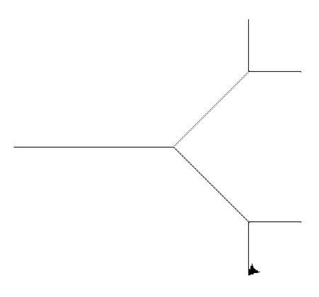
Testovač bude volať tieto tri funkcie s rôznymi L-systémami. Aby si zbytočne nepomýlil testovač, používaj len korytnačie príkazy uvedené pri funkcii priprav(). Niektoré ďalšie buď testovač ignoruje, alebo vyhlási chybu.